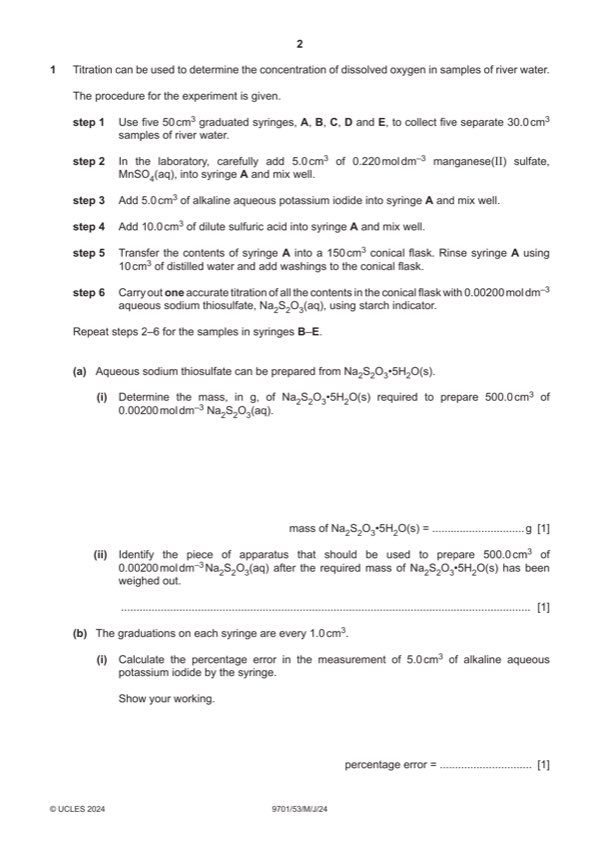

Question 1

Original paper page 2
Part 1(a)(i) — solution
0.248(2) (g) 1
Mark points
- Include the ideas shown in the solution above.
Part 1(a)(ii) — solution
(500 cm3) volumetric flask 1
Mark points
- Include the ideas shown in the solution above.
Part 1(b)(i) — solution
- 100 = 20(.0%)
Mark points
- 100 = 20(.0%)
Part 1(b)(ii) — solution
greater no effect smaller 1
uncertainty of the
measurement
percentage error of the
measurement
Mark points
- Include the ideas shown in the solution above.
Part 1(c)(i) — solution
- [M1] rinse / wash (50 cm3 burette) with (0.0200 mol dm–3 aqueous) sodium thiosulfate (before filling with aqueous sodium 2
- [M2] place (aqueous) sodium thiosulfate in the burette (to fill) AND then run some solution out (through the jet) (by opening
Mark points
- [M1] rinse / wash (50 cm3 burette) with (0.0200 mol dm–3 aqueous) sodium thiosulfate (before filling with aqueous sodium 2
- [M2] place (aqueous) sodium thiosulfate in the burette (to fill) AND then run some solution out (through the jet) (by opening
Part 1(b)(ii) — solution
- add / run Na2S2O3(aq) (into the conical flask)
- until (permanent) colour change (seen) / end-point reached
- [M2] add dropwise (towards the end) (to ensure the end-point is accurate)
Mark points
- add / run Na2S2O3(aq) (into the conical flask)
- until (permanent) colour change (seen) / end-point reached
- [M2] add dropwise (towards the end) (to ensure the end-point is accurate)
Part 1(d) — solution
to ensure the reaction(s) is / are complete (in the syringe) 1
University Press & Assessment 2024 Page 5 of 7
9701/53 Cambridge International AS & A Level – Mark Scheme May/June 2024
Mark points
- Include the ideas shown in the solution above.
Part 1(e) — solution
Answer: 2
- [M1] headings and units correct for table
- initial / start and (burette) reading / volume
- final / end and (burette) reading / volume
- titre or volume / (0.002(00) mol dm–3) sodium thiosulfate (solution) and used / added
- units: (cm3) or / cm3 or in cm3 for all headings
- [M2] five columns for syringes A–E
Mark points
- [M1] headings and units correct for table
- initial / start and (burette) reading / volume
- final / end and (burette) reading / volume
- titre or volume / (0.002(00) mol dm–3) sodium thiosulfate (solution) and used / added
- units: (cm3) or / cm3 or in cm3 for all headings
- [M2] five columns for syringes A–E
Part 1(f) — solution
- [M1] n(Na2S2O3) = 12.65 / 1000 0.00200 = 2.53 10–5 2
- [M2] n(O2) = M1 / 4 = (2.53 10–5 / 4 = 6.325 10–6 mol)
- [M1] / 4) 1000 / 30 (= 2.10833 10–4 mol dm–3) (= 2.11 10–4 mol dm–3)
Mark points
- [M1] n(Na2S2O3) = 12.65 / 1000 0.00200 = 2.53 10–5 2
- [M2] n(O2) = M1 / 4 = (2.53 10–5 / 4 = 6.325 10–6 mol)
- [M1] / 4) 1000 / 30 (= 2.10833 10–4 mol dm–3) (= 2.11 10–4 mol dm–3)
Part 1(g)(i) — solution
there was (a small amount of dissolved) oxygen in the other solutions / reagents / reactants (used in the experiment) 1
Mark points
- Include the ideas shown in the solution above.
Part 1(g)(ii) — solution
subtract the result (2.26 10–5 mol dm–3) of the distilled water experiment from the final result for dissolved oxygen in 1(f) 1
Mark points
- Include the ideas shown in the solution above.
Part 1(h) — solution
Answer: OR chlorine reacts in the same way as oxygen · OR chlorine reacts with Mn2+ / S2O32– / I– / reactant(s)
- OR chlorine reacts with Mn2+ / S2O32– / I– / reactant(s)
Mark points
- OR chlorine reacts with Mn2+ / S2O32– / I– / reactant(s)
Part 1 — solution
Answer: AND
at the start of reaction / step 7 OR (immediately) before step 7 OR step 6 / (immediately) before the reaction OR
(immediately) after step 5
AND
Mark points
- Correct result: AND